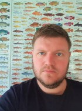
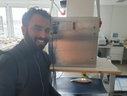
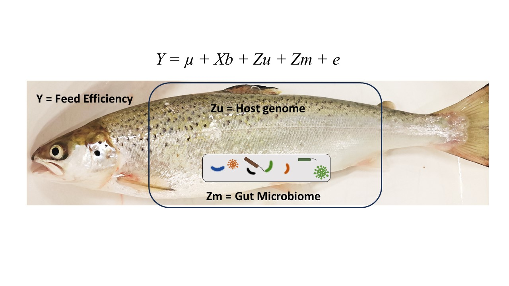
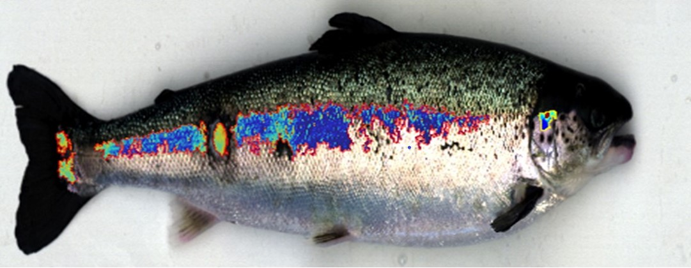
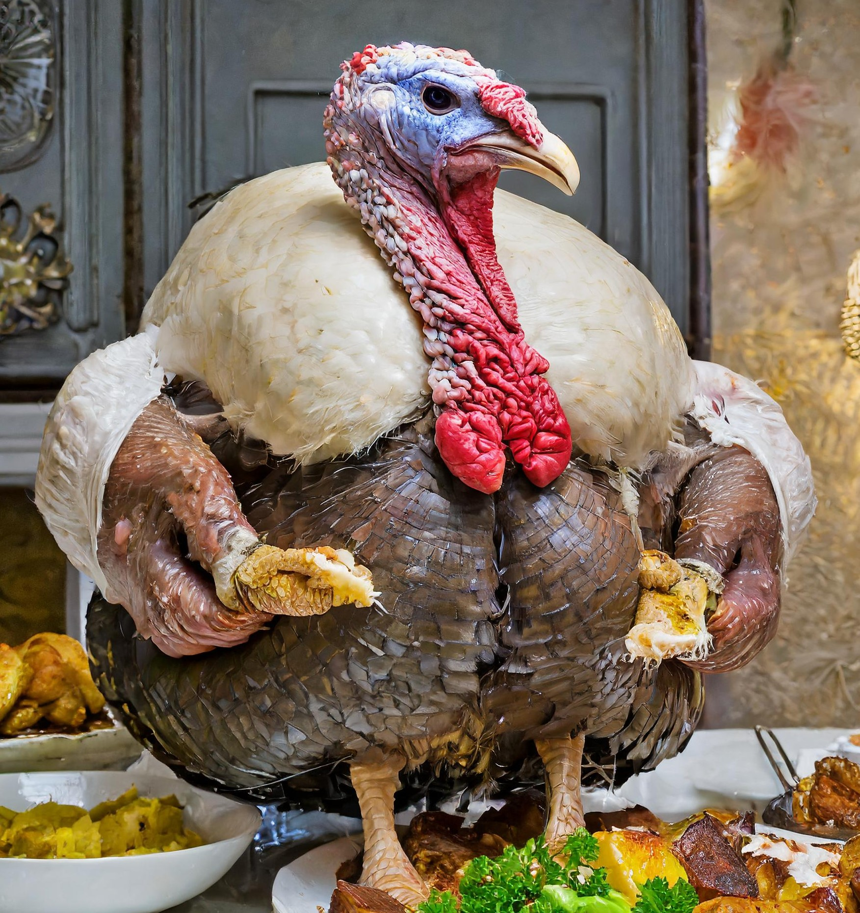

Phenotype Forge
Research Focus
Our research is mission driven. We want to breed more feed efficient, climate friendly,
climate resilient animals, whilst ensuring high production and animal welfare.
The challenge is that inorder to understand and utilize the genetic variation behind new traits,
we need phenotyping solutions which can phenotype thousands of related individuals.
We strive to continuously push measurement technology to overcome barriers
in 'expensive or difficult to measure traits', by focusing on non-invasive, cost effective,
rapid and large-scale measurements. Species of particular interest are Atlantic salmon, Dairy cattle and Sheep.

Feed efficiency in salmon
The X-ray method
Recording individual feed intake is extremely challenging in
Atlantic salmon. Using radio-opque beadlets inside the feed we
can X-ray fish after feeding and infer their feed intake
Using image analysis and deep learning we can rapidly count
the beadlets. This research has found feed intake to be heritable
in Atlantic salmon and our current focus is now
understanding the genetic architecuture behind feed efficiency.
In collaboration with Nofima & Mowi Genetics
Read More & Here
Methane emission in Dairy Cattle
The sniffer method
Dairy cattle & other ruminants produce methane (CH4) as a
natural byproduct of digesting human-inedible fibre. This gas
has a substantial climate warming potential. It is extremely
challenging & costly to record CH4 production using
respiration chambers. By installing 'sniffers' in the feed bin
of automated milking stations, it is possible to measure the
concentration of CH4 in the cows breath, multiple times a day
without the cow even realising. We have found this phenotype
to be significantly heritable & genetically correlated to feed
efficiency, meaning there is potential to improve feed
efficiency & reduce CH4 production.
In collaboration with QGG, Aarhus University.
Read More & Here

Methane production in sheep
Portable Accumulation Chambers
Portable accumulation chambers (PAC) are a great method to
record CH4 production in sheep. Numerous research groups
around the globe are using PACs. Despite this, PACs have
received little measurement validation. In collaboration
with The Farm Technology Group at Wageningen Univeristy &
Research, we used a mass flow controller to release higly
precise amounts of pure CH4 into the PACs. We found PACs
highly repeatable 0.99 and precise with a CV less than 1%.
Making them extremely well suited to ranking animals
Read More
Members of the Forge
-

Gareth Difford
Lead PI
Forging phenotypes
-

Aqeel Ahmad
PhD candidate
High throughput digital phenotyping & quantitative genetics
Aqeel Ahmad
for feed efficiency in Atlantic Salmon -

Jisoo Park
PhD candidate
Optimization and assessment of Omega-3
fatty acids from high-dimensional spectroscopic data in Atlantic salmon breeding programs -

Nicholas Jacob
MSc European Master in Animal Breeding & Genetics
Image Analysis for High Throughput
Phenotyping of Nile Tilapia Body Weight
-

July Ariñez
MSc European Master in Animal Breeding & Genetics
Estimating microbiability and heritability
in Atlantic salmon for feed efficiency
-

Avnik Orbelians
MSc Data Science
Automated wound detection with
Hyperspectral images in Atlantic salmon
-

Giosue Vaccari
MSc European Master in Animal Breeding & Genetics
Genetics of gluttony measured with automated
feeding stations in turkey
"In the age of the genotype, phenotype is king" Professor Mike Coffey